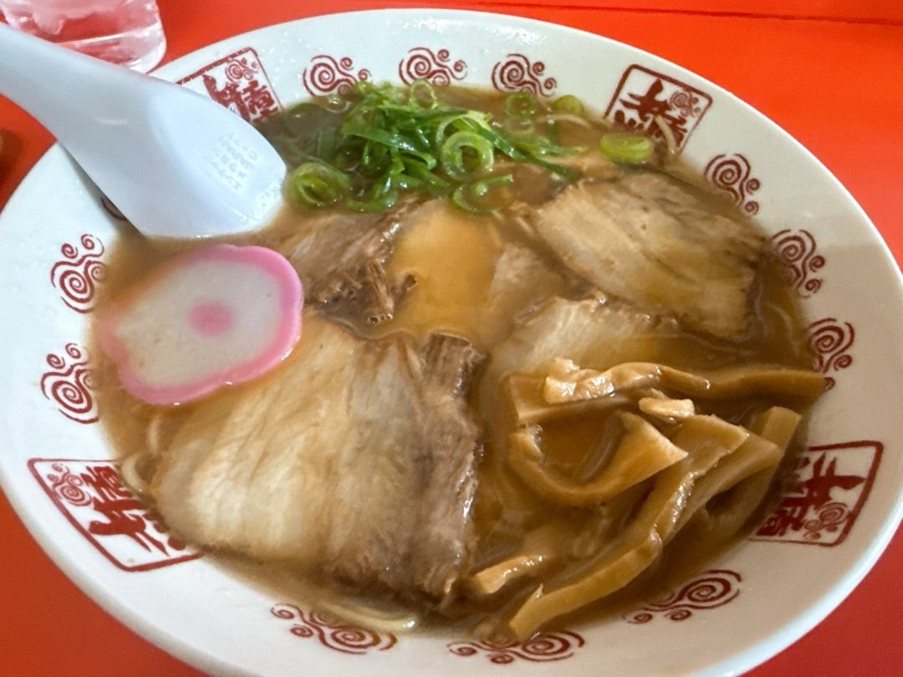
| 営業時間 | 11:30〜22:00（L.O.21:30） |
|---|---|
| 定休日 | 木曜 |
| 住所 | 和歌山県和歌山市田中町4-84 |
| 予約 | 不可 — ☎ 073-424-1689 ／ 公式サイト |
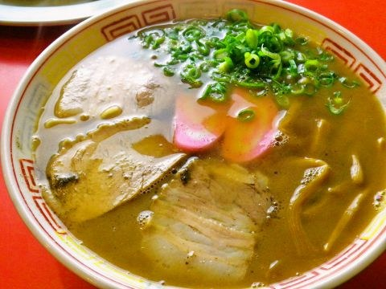
| 営業時間 | 17:30〜翌3:00 |
|---|---|
| 定休日 | 日曜（月曜が定休となる場合あり） |
| 住所 | 和歌山県和歌山市友田町2-50 |
| 予約 | 不可 — ☎ 073-432-3313 |
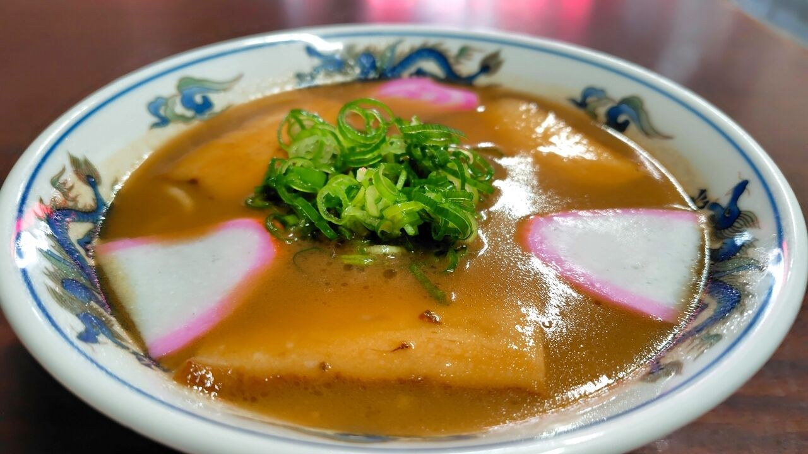
| 営業時間 | 11:00〜17:00 |
|---|---|
| 定休日 | 日曜・祝日 |
| 住所 | 和歌山県和歌山市福町12 |
| 予約 | 不可 — ☎ 073-422-9113 |
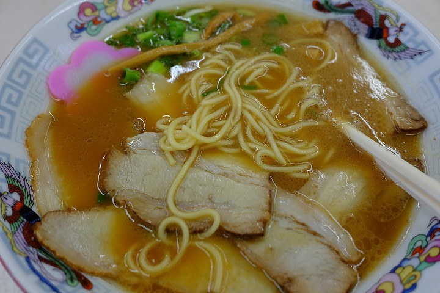
| 営業時間 | 11:00〜21:00（L.O.20:45） |
|---|---|
| 定休日 | 木曜・第3水曜 |
| 住所 | 和歌山県和歌山市直川591-1 |
| 予約 | 不可 — ☎ 073-461-1739 |
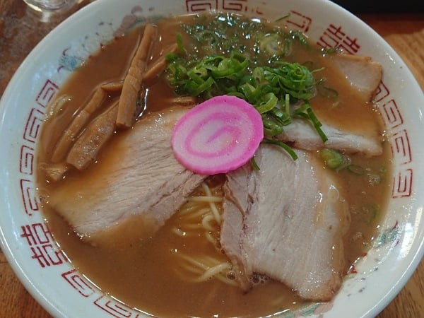
| 営業時間 | 11:00〜20:00 |
|---|---|
| 定休日 | 日曜・祝日 |
| 住所 | 和歌山県和歌山市塩屋6-2-88 |
| 予約 | 不可 — ☎ 073-444-1971 |
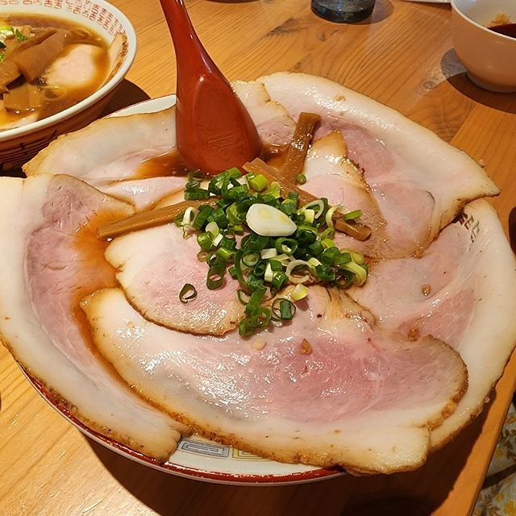
| 営業時間 | 11:00〜14:00／17:30〜20:20（土日祝は夜の時間帯が異なる。スープが無くなり次第閉店） |
|---|---|
| 定休日 | 月曜（祝日の場合は翌日）・不定休あり |
| 住所 | 和歌山県和歌山市毛見1130-3 |
| 予約 | 不可 — ☎ 073-445-4881 |
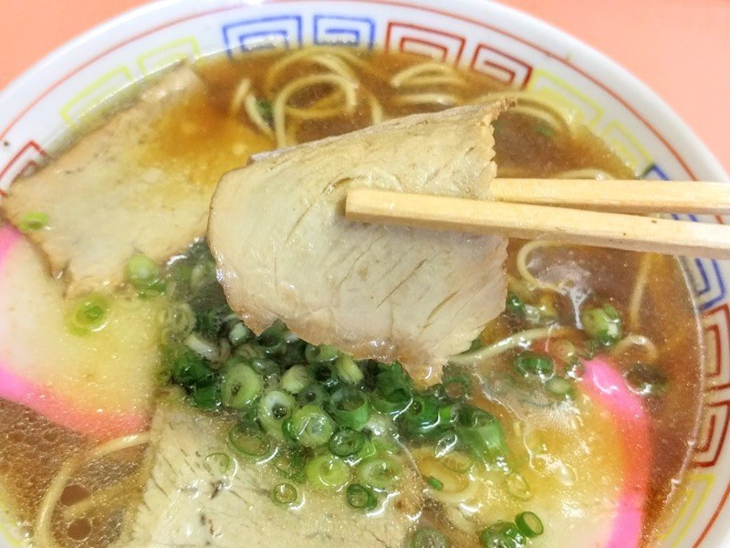
| 営業時間 | 火〜金 11:00〜15:00／17:00〜翌1:30、土日祝 11:00〜翌1:30 |
|---|---|
| 定休日 | 月曜（月曜が祝日の場合は営業し翌火曜が休み） |
| 住所 | 和歌山県和歌山市小松原6-1-13 |
| 予約 | 不可 — ☎ 073-423-6071 |
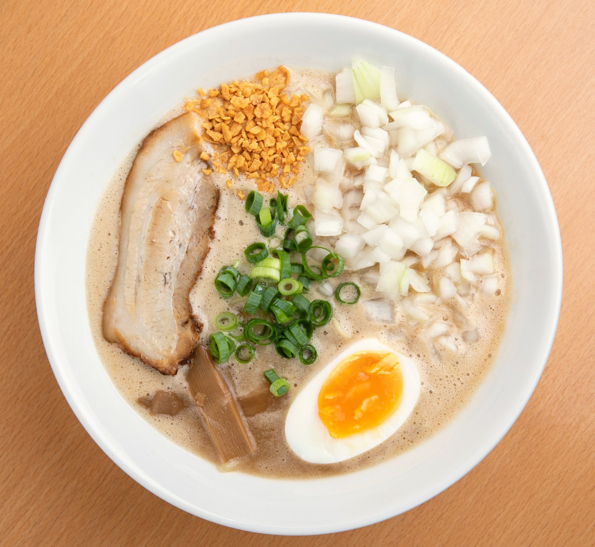
| 営業時間 | 月〜土 11:00〜21:00（L.O.20:45）、日曜 11:00〜17:00 |
|---|---|
| 定休日 | なし（年中無休） |
| 住所 | 和歌山県和歌山市十二番丁87 ル・シャトー十二番丁1F |
| 予約 | 不可 — ☎ 073-425-6678 ／ 公式サイト |
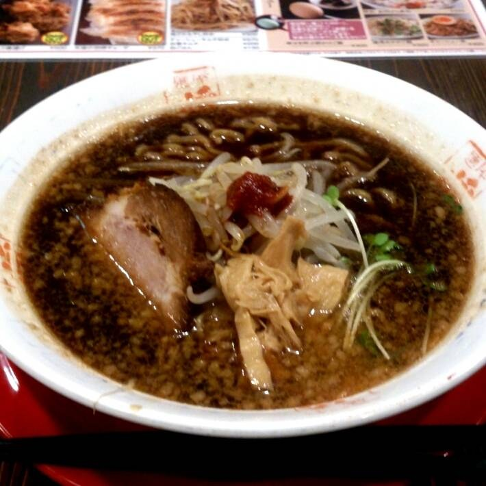
| 営業時間 | 11:00〜23:00（L.O.22:30） |
|---|---|
| 定休日 | 月曜 |
| 住所 | 和歌山県和歌山市卜半町45 |
| 予約 | 不可 — ☎ 073-423-6330 |
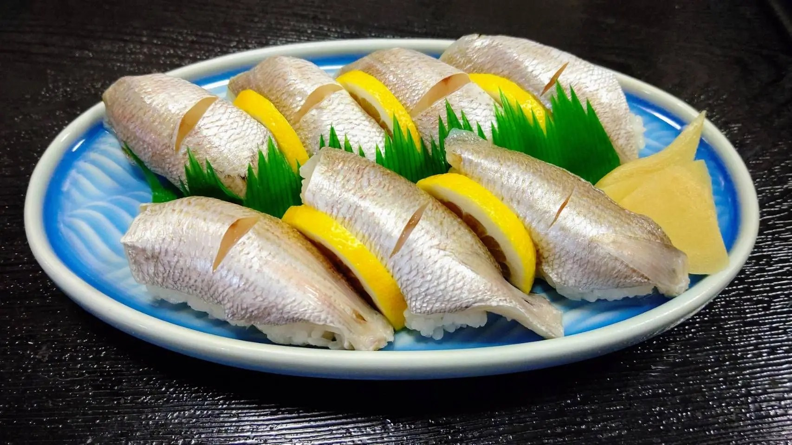
| 営業時間 | 11:00〜20:00頃 |
|---|---|
| 定休日 | 水曜（祝日の場合は営業） |
| 住所 | 和歌山県和歌山市本町4-31 |
| 予約 | 不可 — ☎ 073-422-4806 |
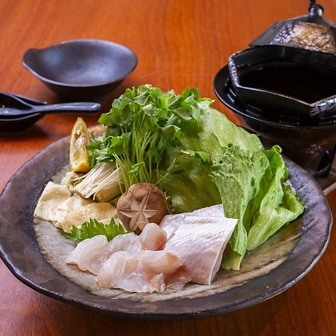
| 営業時間 | 11:00〜14:30（料理L.O.13:30）／17:00〜22:00（料理L.O.21:00） |
|---|---|
| 定休日 | 水曜 |
| 住所 | 和歌山県和歌山市十一番丁22 |
| 予約 | 予約推奨 — ☎ 073-494-7788 |
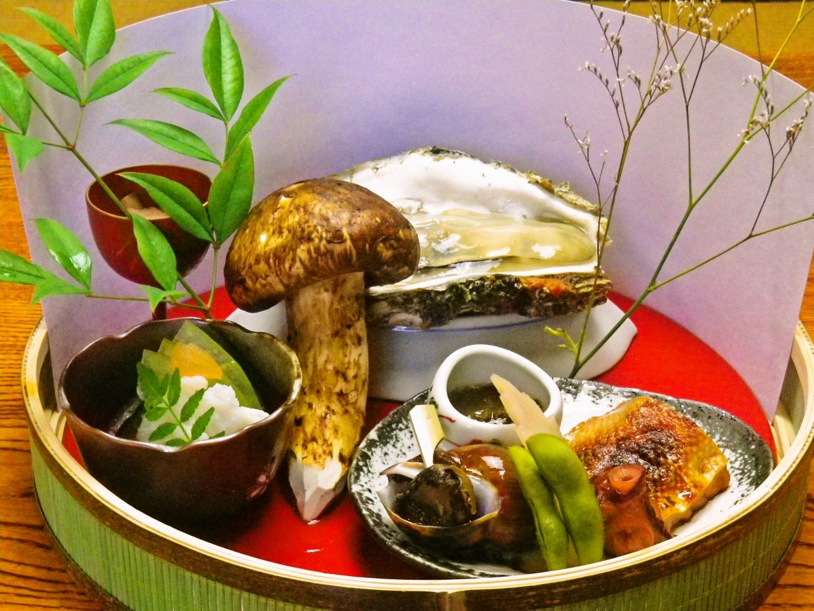
| 営業時間 | 11:30〜13:30（L.O.13:30）／16:00〜21:30（L.O.21:30） |
|---|---|
| 定休日 | 水曜（水曜は予約のみ営業） |
| 住所 | 和歌山県和歌山市吉田366 |
| 予約 | 予約推奨 — ☎ 073-428-2778 |
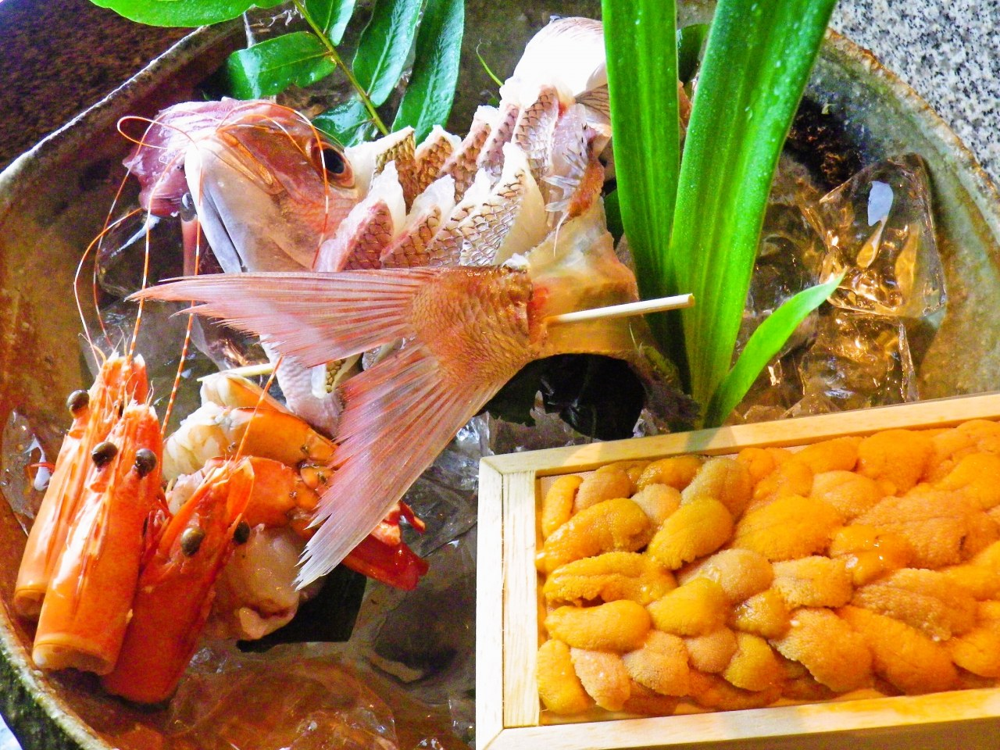
| 営業時間 | 11:00〜14:30／17:00〜22:00 |
|---|---|
| 定休日 | 日曜 |
| 住所 | 和歌山県和歌山市吉田548 ニュー東和コーポ |
| 予約 | 予約推奨 — ☎ 073-436-3085 |
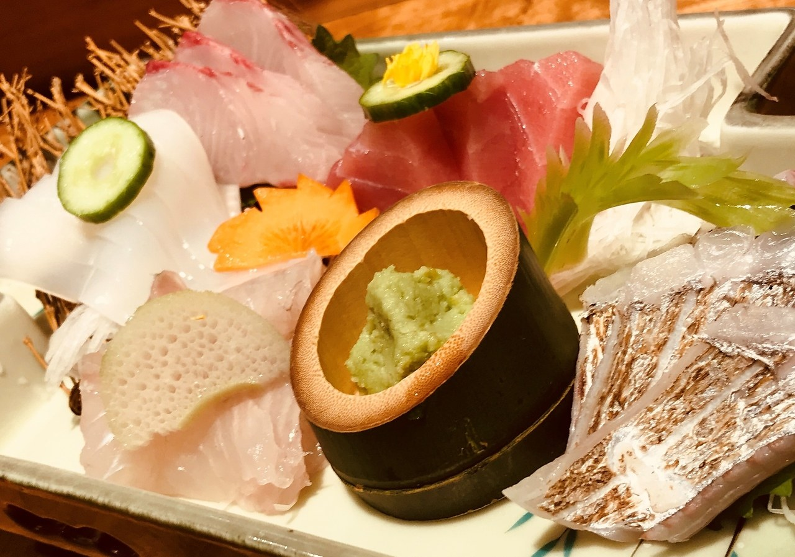
| 営業時間 | 11:30〜14:00（料理L.O.13:30）／17:30〜22:00（料理L.O.21:30）※火曜の夜は20:00まで |
|---|---|
| 定休日 | 水曜 |
| 住所 | 和歌山県和歌山市加納町53 |
| 予約 | 予約推奨 — ☎ 073-418-7535 |
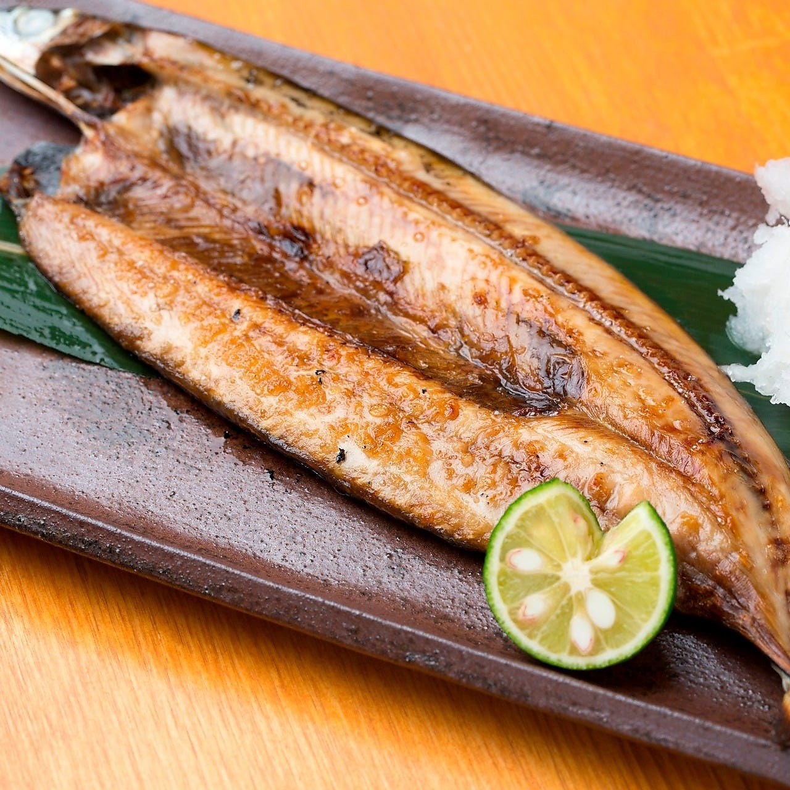
| 営業時間 | 月〜木11:30〜14:00／17:30〜23:00、金・祝前日は17:30〜翌0:00、土日祝は17:00〜23:00 |
|---|---|
| 定休日 | 無休 |
| 住所 | 和歌山県和歌山市十三番丁34 |
| 予約 | 予約推奨 — ☎ 073-499-4997 |
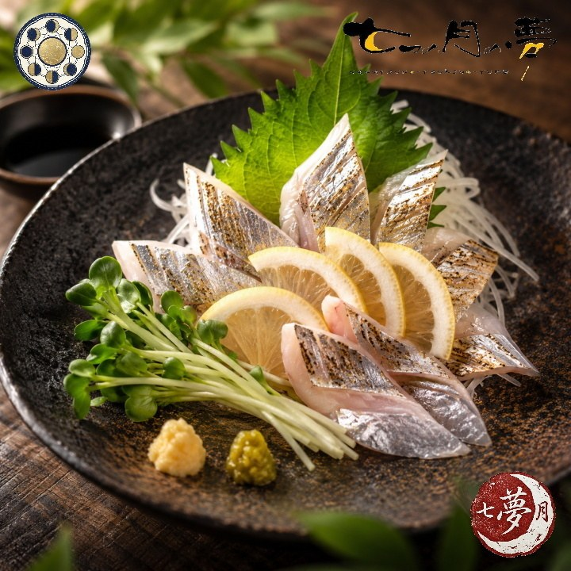
| 営業時間 | 11:00〜14:00（料理L.O.13:30）／17:30〜22:00（料理L.O.21:00）※金・土・祝前日は23:00まで |
|---|---|
| 定休日 | 木曜（年末年始・GW・お盆は無休） |
| 住所 | 和歌山県和歌山市和歌浦東2-8-25 |
| 予約 | 予約推奨 — ☎ 073-441-7040 |
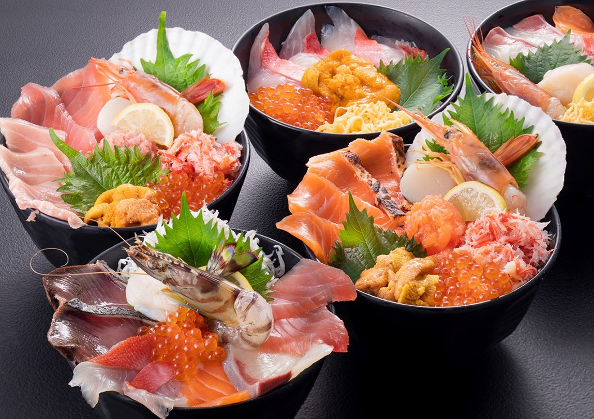
| 営業時間 | 10:00〜17:00（時期により変動。1階フードコートは10:00/11:00〜16:30、浜焼きバーベキューは11:00〜17:00） |
|---|---|
| 定休日 | 年中無休（メンテナンス休業あり。公式の営業カレンダーで要確認） |
| 住所 | 和歌山県和歌山市毛見1527 |
| 予約 | 予約不要 — ☎ 073-448-0008 ／ 公式サイト |
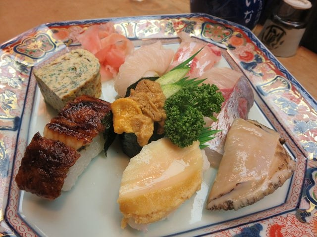
| 営業時間 | 11:00〜15:00（L.O.14:30）／土曜・祝日（土曜扱いの日）は17:00〜21:00（L.O.20:00）も営業 |
|---|---|
| 定休日 | 平日不定休（要問い合わせ） |
| 住所 | 和歌山県和歌山市加太196 |
| 予約 | 予約推奨 — ☎ 073-459-0118 ／ 公式サイト |
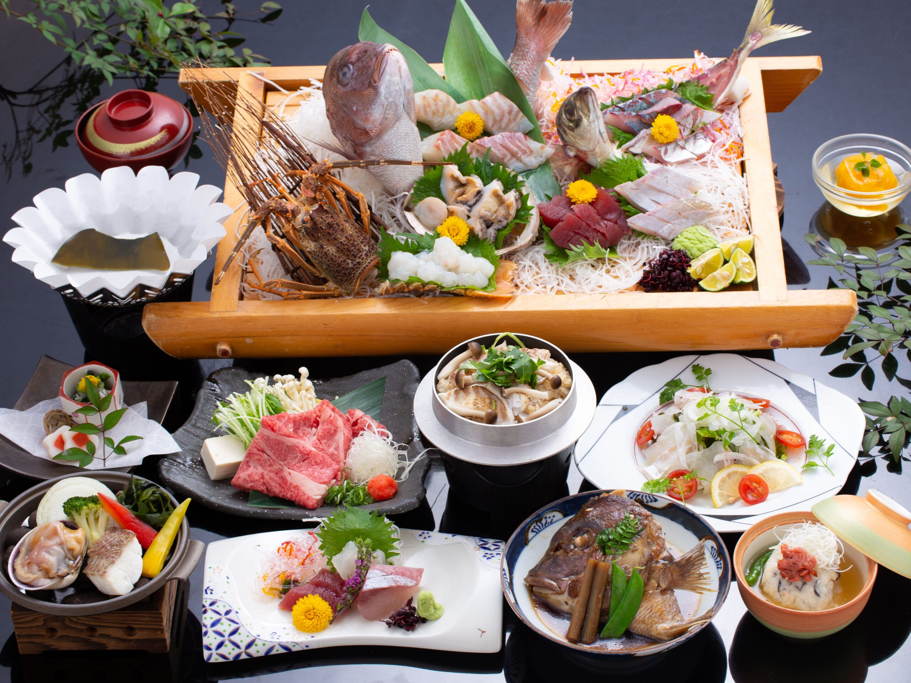
| 営業時間 | 11:00〜15:00（ランチL.O.13:00）／16:00〜21:00（テラスBBQ L.O.19:00） |
|---|---|
| 定休日 | なし |
| 住所 | 和歌山県和歌山市加太1905 |
| 予約 | 要予約 — ☎ 073-459-0015 ／ 公式サイト |
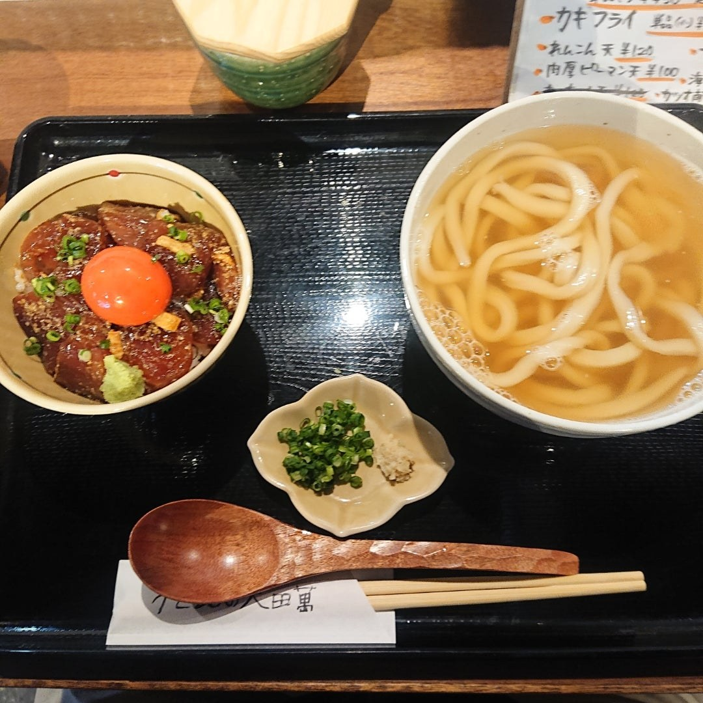
| 営業時間 | 11:00〜15:00（L.O.14:30）／17:30〜21:00（L.O.20:30） |
|---|---|
| 定休日 | 日曜・月曜（変則的） |
| 住所 | 和歌山県和歌山市本町3丁目35 |
| 予約 | 予約不要 — ☎ 073-497-8013 |
| 営業時間 | 11:00〜14:00（L.O.） |
|---|---|
| 定休日 | 水曜 |
| 住所 | 和歌山県和歌山市万町25 フューチャー本町2F |
| 予約 | 予約推奨 — ☎ 080-8032-0259 ／ 公式サイト |
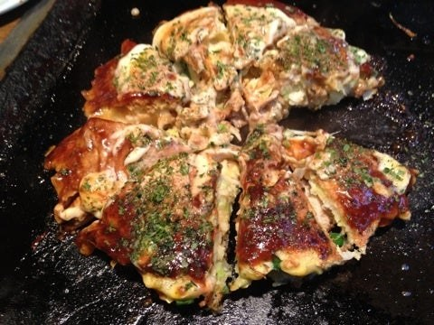
| 営業時間 | 11:00〜22:30 |
|---|---|
| 定休日 | 木曜 |
| 住所 | 和歌山県和歌山市美園町5丁目5-3 みその商店街 |
| 予約 | 予約不要 — ☎ 073-436-4575 |
| 営業時間 | 11:30〜22:00 |
|---|---|
| 定休日 | 月曜 |
| 住所 | 和歌山県和歌山市北ノ新地東ノ丁15 |
| 予約 | 予約不要 — ☎ 073-425-1140 |
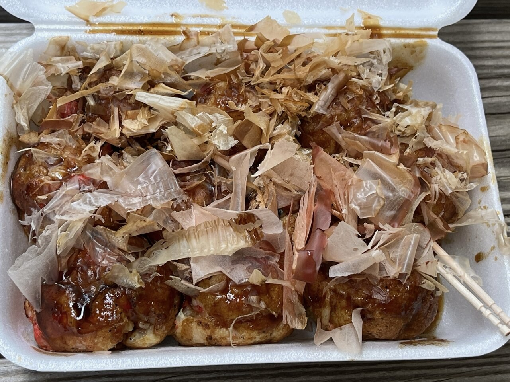
| 営業時間 | 9:30〜15:30 |
|---|---|
| 定休日 | 不定休（未確認） |
| 住所 | 和歌山県和歌山市雑賀崎1308 |
| 予約 | 予約不要 — ☎ 073-445-7680 |
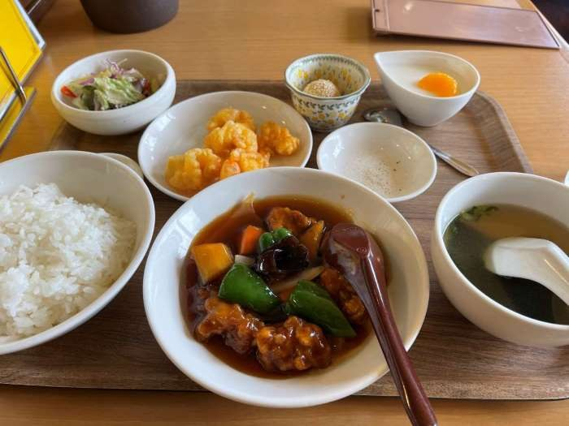
| 営業時間 | 11:00〜22:30（L.O.22:00） |
|---|---|
| 定休日 | 火曜 |
| 住所 | 和歌山県和歌山市手平1丁目1-5 |
| 予約 | 予約可 — ☎ 073-436-5970 |
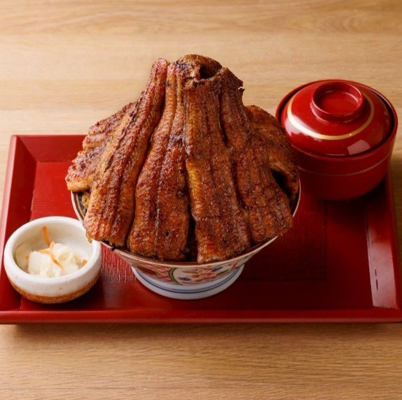
| 営業時間 | 11:30〜14:00／17:00〜20:30 |
|---|---|
| 定休日 | 月曜・第2第4火曜 |
| 住所 | 和歌山県和歌山市園部1505-7 |
| 予約 | 予約不要 — ☎ 073-462-7227 |
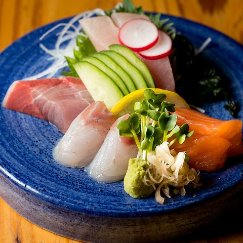
| 営業時間 | 11:30〜14:00（料理L.O.13:30）／17:30〜23:00（料理L.O.22:00、ドリンクL.O.22:30） |
|---|---|
| 定休日 | 年末年始（12月31日〜1月1日）のみ |
| 住所 | 和歌山県和歌山市西ノ店20 |
| 予約 | 予約推奨 — ☎ 073-494-3536 |
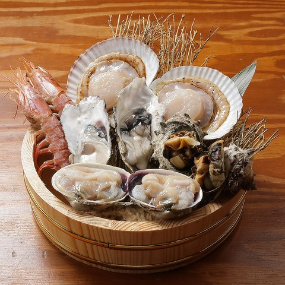
| 営業時間 | 18:00〜23:00（料理L.O.22:00、ドリンクL.O.22:30） |
|---|---|
| 定休日 | 無休 |
| 住所 | 和歌山県和歌山市美園町5丁目9-2 ユーコムビル1階 |
| 予約 | 予約可 — ☎ 073-422-8989 |
| 営業時間 | 月〜金・祝日 17:00〜23:00（料理L.O.22:00）／土・日 17:00〜23:30（料理L.O.22:30） |
|---|---|
| 定休日 | 不定休 |
| 住所 | 和歌山県和歌山市美園町4-59-1 |
| 予約 | 予約可 — ☎ 070-1813-6899 ／ 公式サイト |
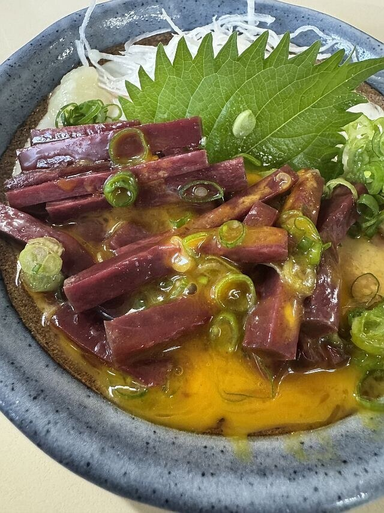
| 営業時間 | 16:00〜23:00（店内掲示より） |
|---|---|
| 定休日 | 第2・4・5日曜（店内掲示より） |
| 住所 | 和歌山県和歌山市美園町5-12-3 |
| 予約 | 予約不要 — ☎ 073-436-4613 |
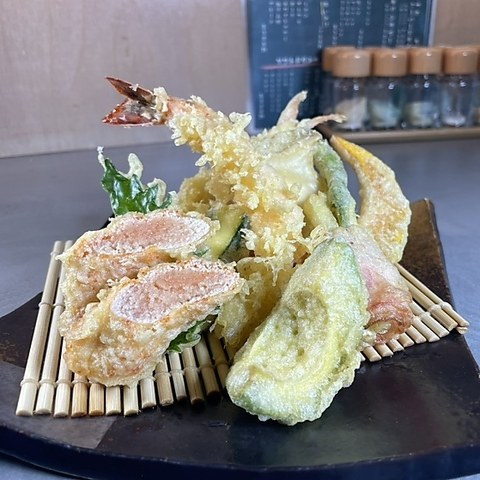
| 営業時間 | 17:00〜23:00（料理L.O.22:30、ドリンクL.O.22:30） |
|---|---|
| 定休日 | 月曜・火曜 |
| 住所 | 和歌山県和歌山市友田町2丁目147 |
| 予約 | 予約推奨 — ☎ 090-2943-0010 |
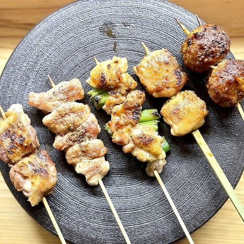
| 営業時間 | 火〜土・祝日・祝前日 17:30〜23:00（料理L.O.22:00）／日曜 17:00〜22:00（料理L.O.21:00） |
|---|---|
| 定休日 | 月曜（祝前日は営業） |
| 住所 | 和歌山県和歌山市北ノ新地中六軒丁14 |
| 予約 | 予約推奨 — ☎ 073-400-6422 |
| 営業時間 | 11:30〜14:00／17:00〜24:00（料理L.O.23:30、ドリンクL.O.23:30） |
|---|---|
| 定休日 | 日曜 |
| 住所 | 和歌山県和歌山市寄合町32 シティハイツ城北1F |
| 予約 | 予約推奨 — ☎ 073-433-2707 |
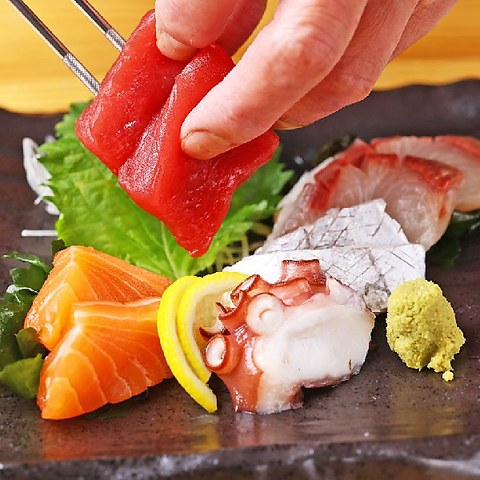
| 営業時間 | 月・水〜土・祝前日 17:30〜22:00（料理L.O.21:30）／日・祝日 17:00〜22:00（料理L.O.21:30） |
|---|---|
| 定休日 | 火曜 |
| 住所 | 和歌山県和歌山市北新4丁目4 |
| 予約 | 予約推奨 — ☎ 073-431-7777 |
| 営業時間 | 17:00〜翌0:00（料理L.O.23:30、ドリンクL.O.23:30） |
|---|---|
| 定休日 | 火曜 |
| 住所 | 和歌山県和歌山市太田4-3-5 川端ビル1F |
| 予約 | 予約推奨 — ☎ 073-499-4664 |
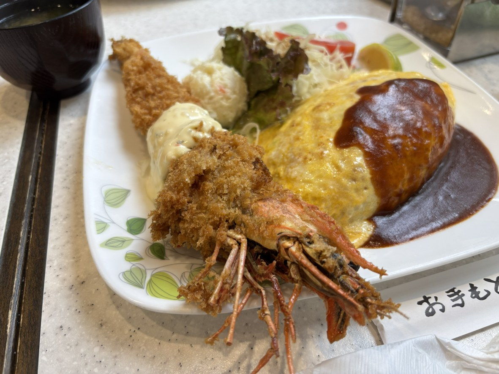
| 営業時間 | 8:00〜20:00（火〜金）／8:00〜21:00（土・日・祝）※食事メニューは11:00〜 |
|---|---|
| 定休日 | 月曜（祝日は営業、翌火曜休み） |
| 住所 | 和歌山県和歌山市関戸5-7-15 |
| 予約 | 予約不要 — ☎ 073-444-6472 |
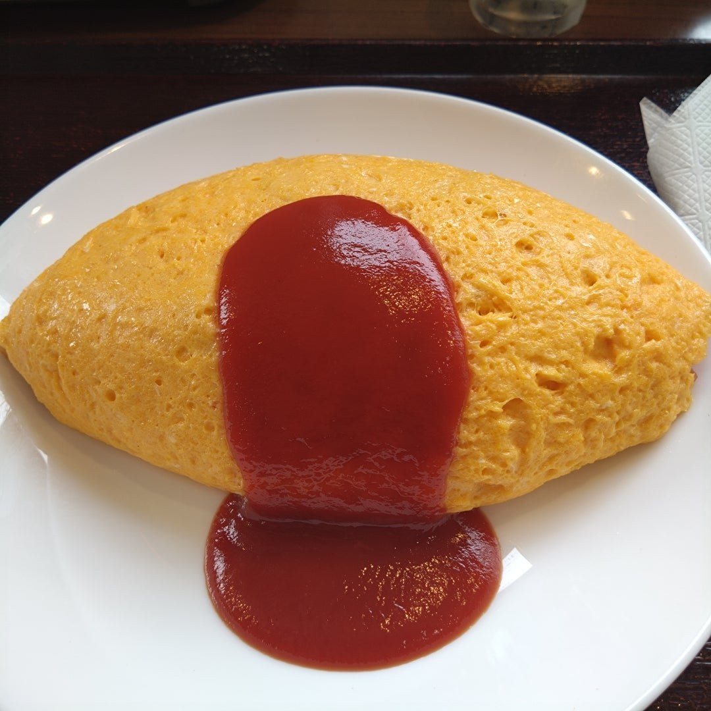
| 営業時間 | 8:00〜14:00（モーニング8:00〜11:00／ランチ11:00〜売り切れ次第終了） |
|---|---|
| 定休日 | 水曜 |
| 住所 | 和歌山県和歌山市雑賀町61 |
| 予約 | 予約不要 — ☎ 073-424-0537 |
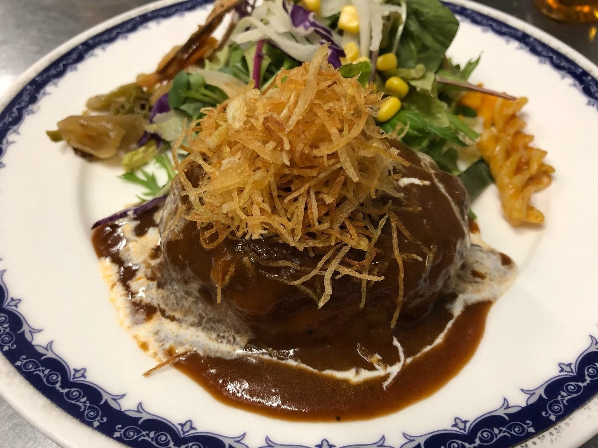
| 営業時間 | 11:30〜15:00（L.O.14:00）／17:30〜22:00（L.O.21:00）※ディナーは前日までの完全予約制 |
|---|---|
| 定休日 | 月曜 |
| 住所 | 和歌山県和歌山市松江759-3 |
| 予約 | 予約推奨 — ☎ 073-454-6266 |
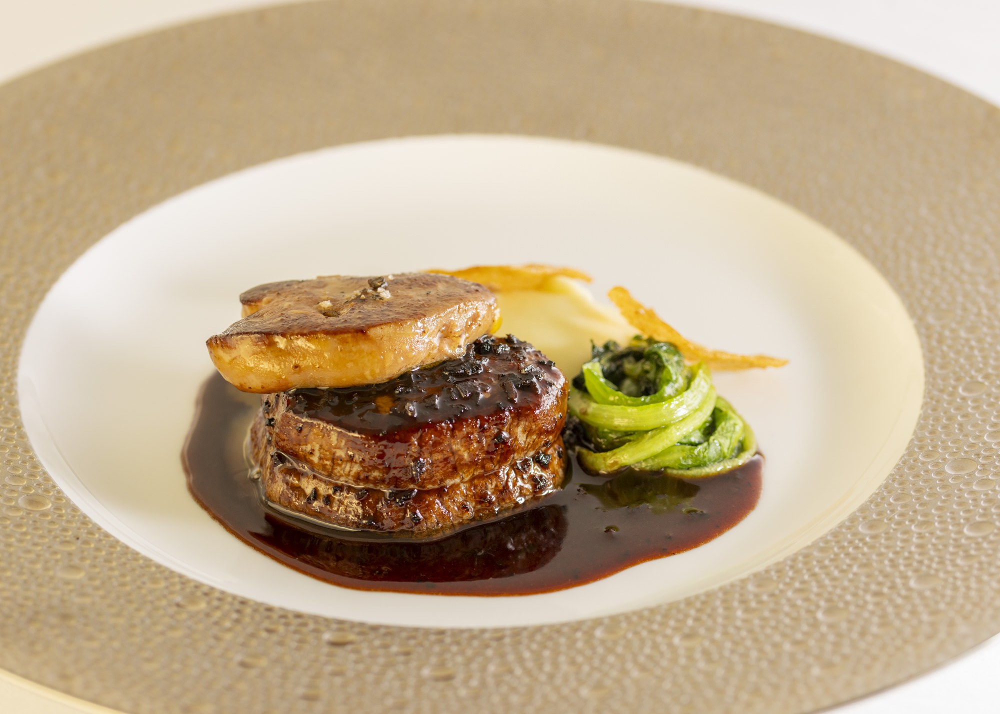
| 営業時間 | 11:30〜13:30（L.O.）／18:00〜20:00（L.O.） |
|---|---|
| 定休日 | 火曜・水曜 |
| 住所 | 和歌山県和歌山市手平2-1-2 和歌山ビッグ愛12F |
| 予約 | 要予約 — ☎ 073-422-0001 ／ 公式サイト |
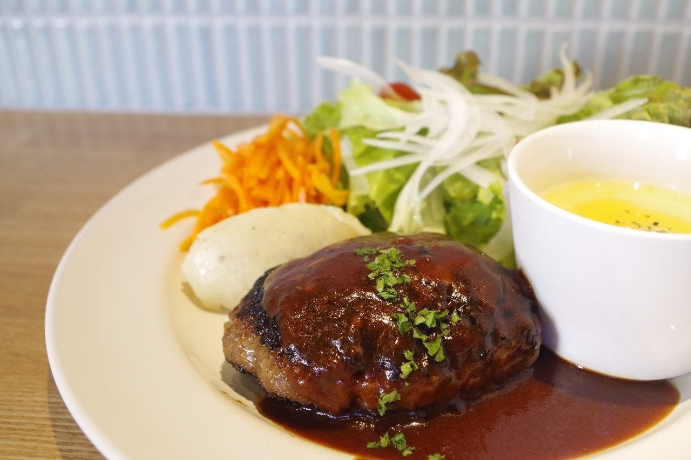
| 営業時間 | 11:30〜15:00（L.O.14:00）／18:00〜22:00（L.O.21:30）※金・土は21:30〜24:00に夜カフェ |
|---|---|
| 定休日 | 月曜・第3日曜 |
| 住所 | 和歌山県和歌山市西ノ店13 |
| 予約 | 予約推奨 — ☎ 073-499-8415 ／ 公式サイト |
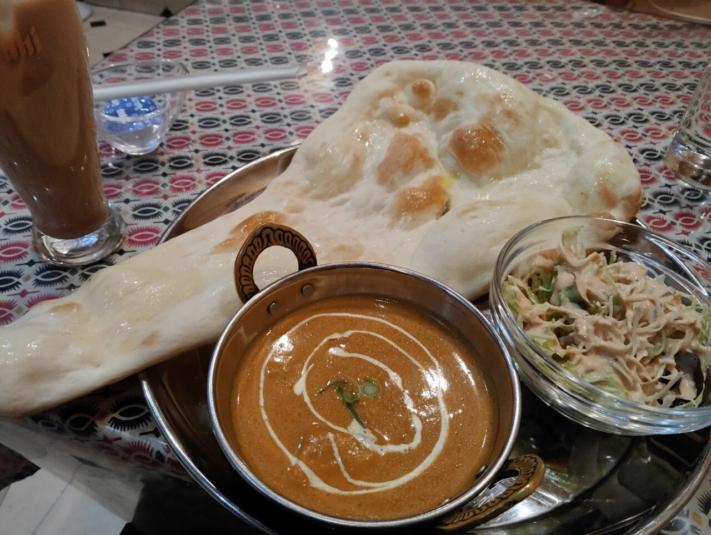
| 営業時間 | 11:00〜14:30／17:00〜22:00 |
|---|---|
| 定休日 | 月曜 |
| 住所 | 和歌山県和歌山市美園町5-7-9 |
| 予約 | 予約可 — ☎ 073-432-3137 |
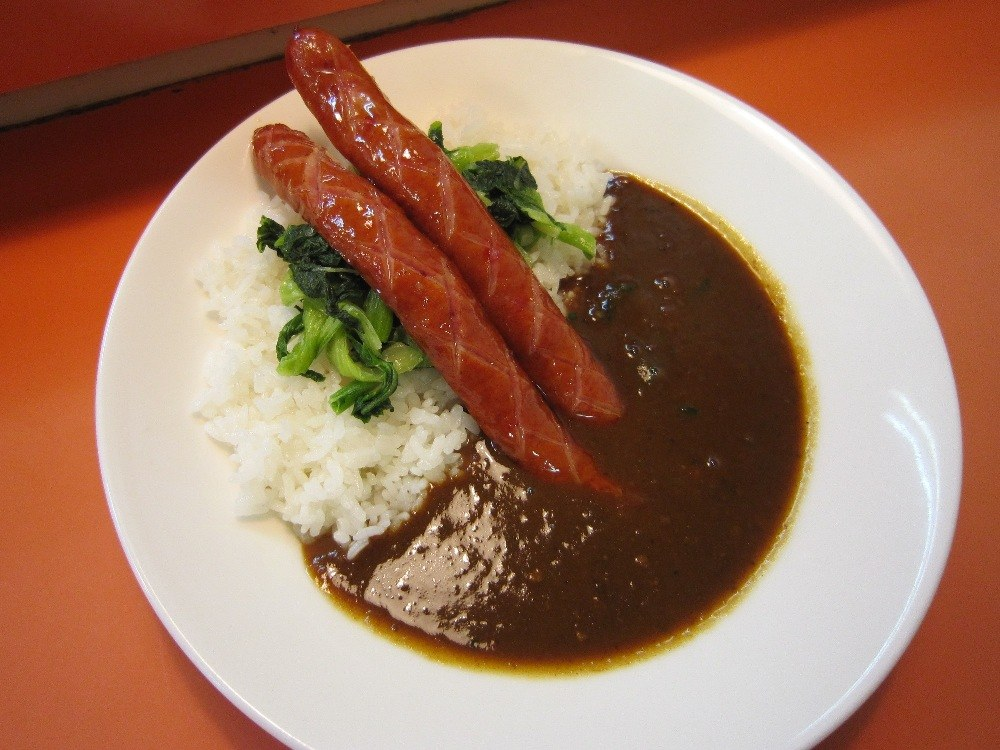
| 営業時間 | 11:00〜19:00 |
|---|---|
| 定休日 | 第1・第3・第5土曜（年末年始12/31〜1/3休） |
| 住所 | 和歌山県和歌山市吹上2-4-56 |
| 予約 | 予約不要 — ☎ 073-424-8282 ／ 公式サイト |
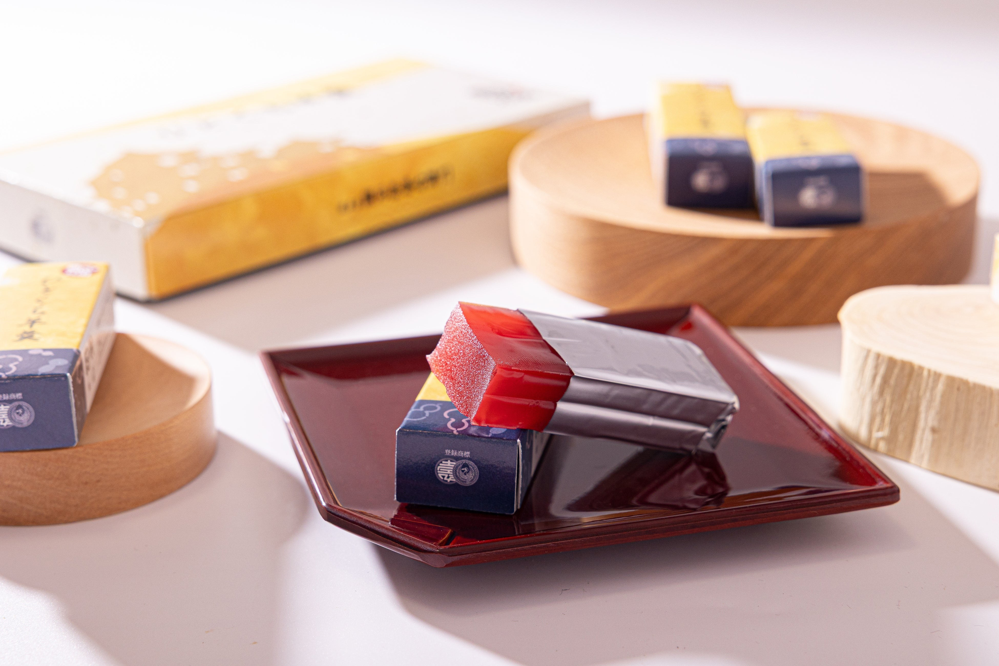
| 営業時間 | 9:00〜18:00 |
|---|---|
| 定休日 | 無休（臨時休業あり） |
| 住所 | 和歌山県和歌山市駿河町12 |
| 予約 | 予約不要 — ☎ 073-431-3411 ／ 公式サイト |
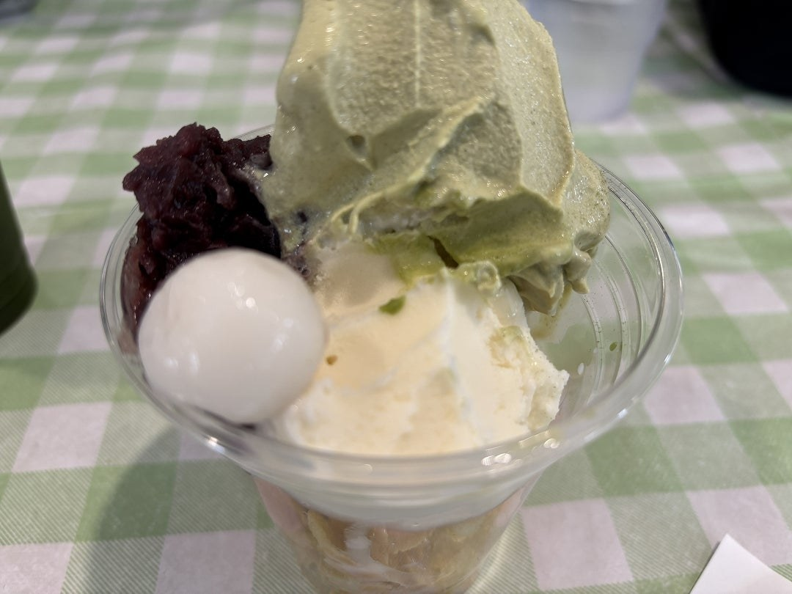
| 営業時間 | 11:00〜22:00（オーダーストップあり）※併設のお茶売場は10:00〜19:00 |
|---|---|
| 定休日 | 無休 |
| 住所 | 和歌山県和歌山市出島48-1 |
| 予約 | 予約不要 — ☎ 080-4293-1909 ／ 公式サイト |
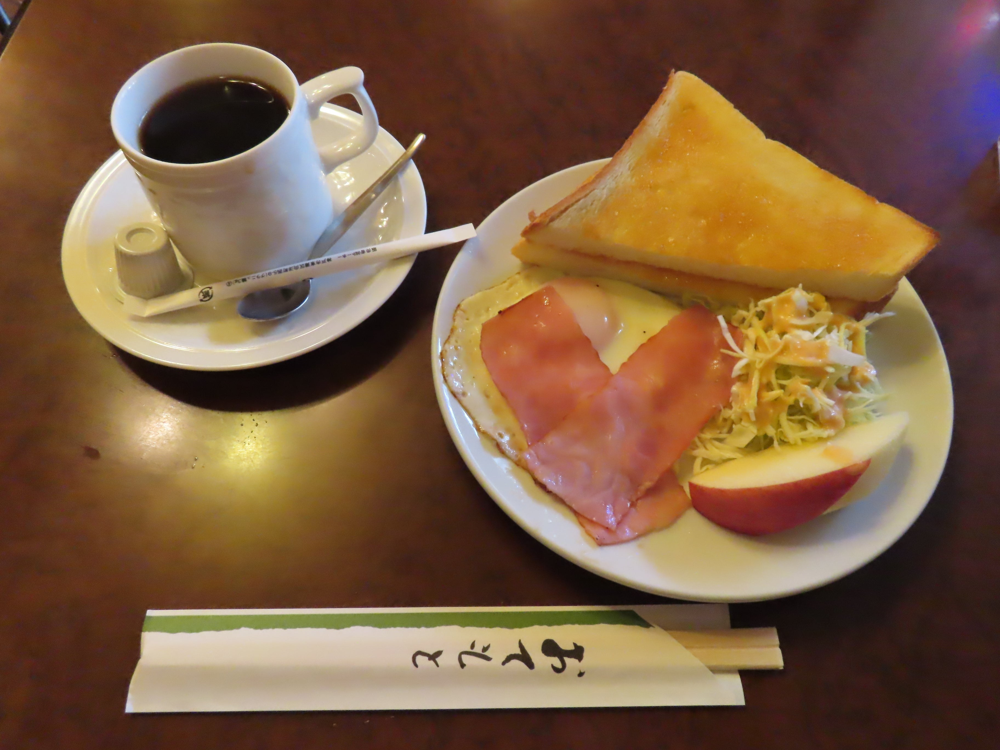
| 営業時間 | モーニングは11:00まで（通し営業時間は出典で確認できず未確認） |
|---|---|
| 定休日 | 未確認 |
| 住所 | 和歌山県和歌山市小人町17 |
| 予約 | 予約不要 |
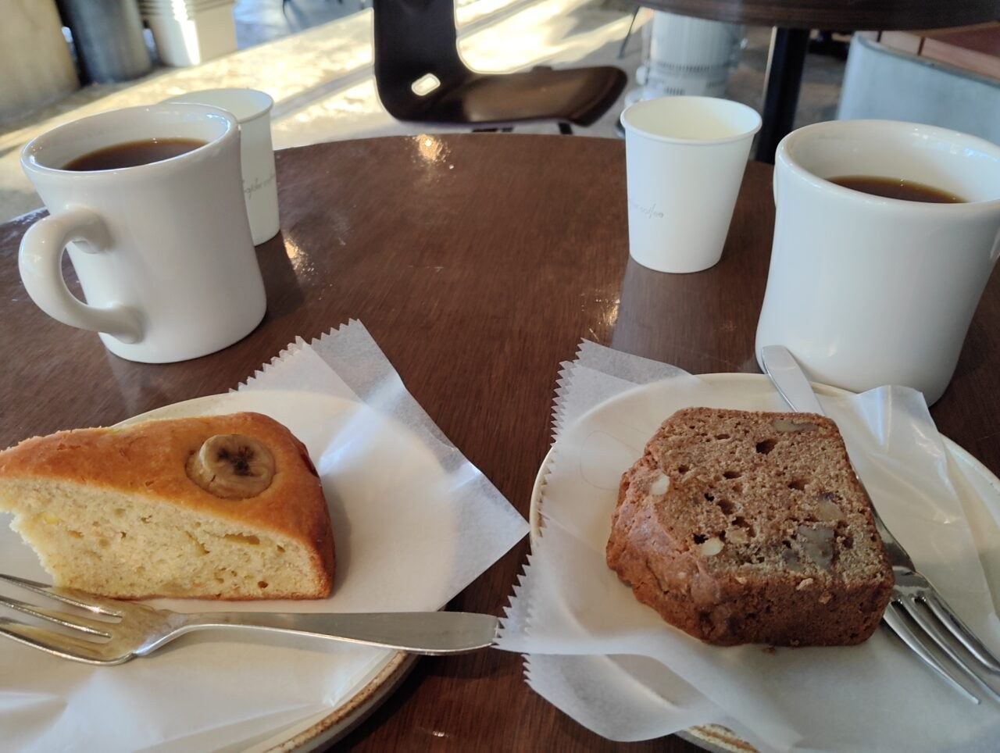
| 営業時間 | 11:00〜19:00 |
|---|---|
| 定休日 | 無休 |
| 住所 | 和歌山県和歌山市坊主丁13 |
| 予約 | 予約不要 |
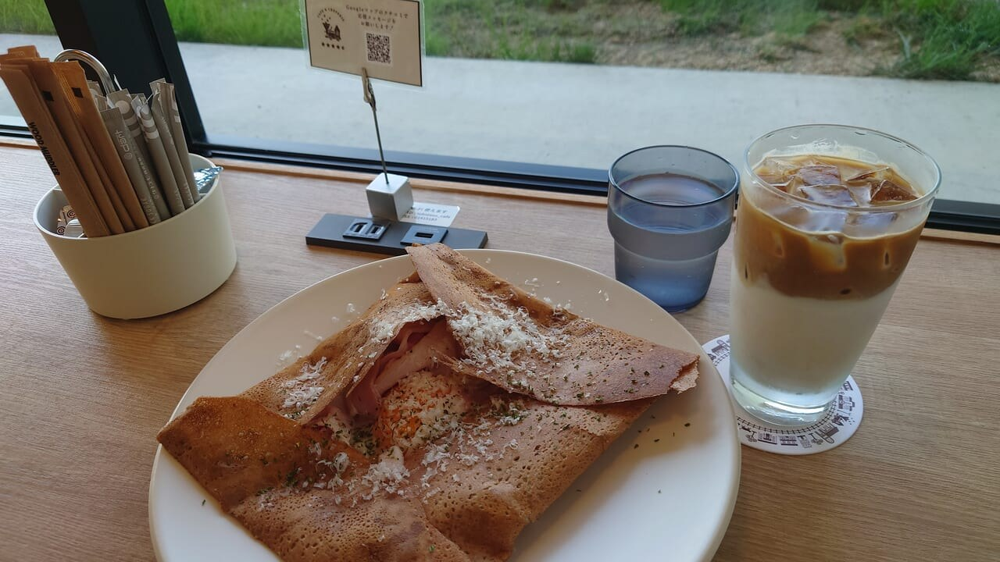
| 営業時間 | 8:00〜19:00 |
|---|---|
| 定休日 | 不定休 |
| 住所 | 和歌山県和歌山市黒田22-1 |
| 予約 | 予約不要 |
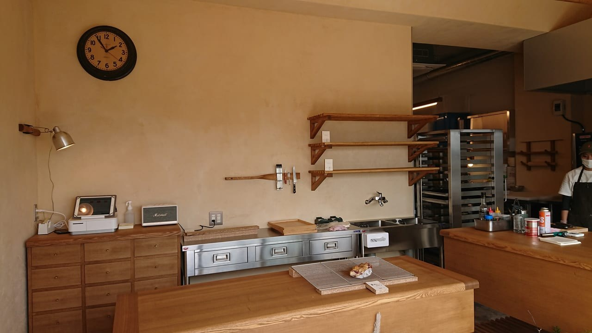
| 営業時間 | 売り切れ次第閉店（開店・閉店時刻は出典で確認できず未確認。公式Instagram @bakery_tick_tack で要確認） |
|---|---|
| 定休日 | 不定休（未確認） |
| 住所 | 和歌山県和歌山市園部637-1 ロイヤルハイツ吉田110 |
| 予約 | 不可 |
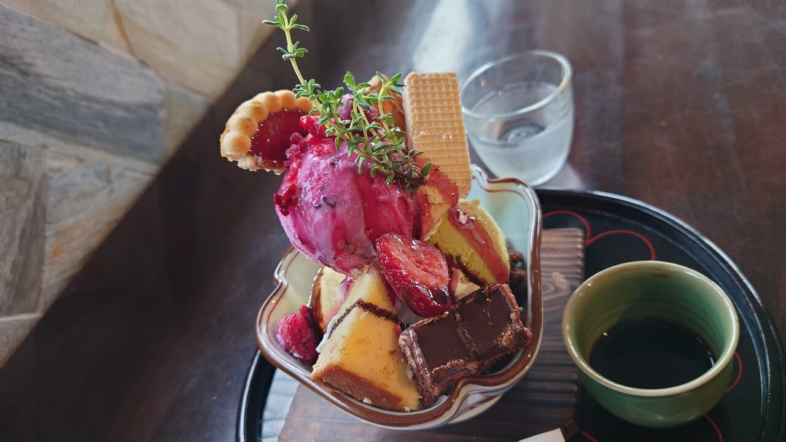
| 営業時間 | 月・木・金 11:00〜17:00（L.O.16:30）／土・日・祝 9:00〜17:00（L.O.16:30） |
|---|---|
| 定休日 | 火曜・水曜 |
| 住所 | 和歌山県和歌山市新和歌浦4-16 新館南2階 |
| 予約 | 予約可 |
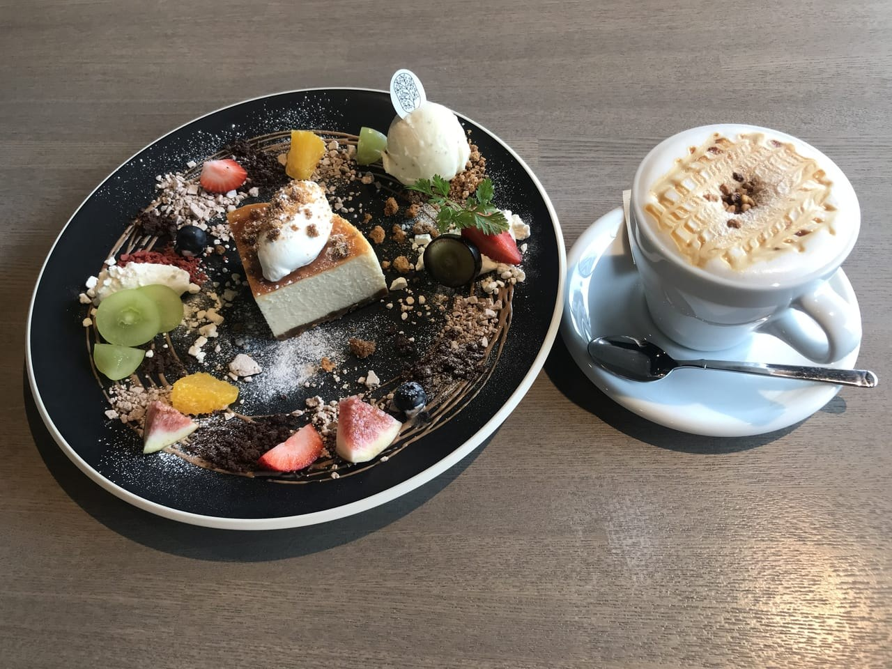
| 営業時間 | 月〜金 12:00〜18:00（L.O.17:00）／土・日・祝 11:00〜18:00（L.O.17:00） |
|---|---|
| 定休日 | 不定休 |
| 住所 | 和歌山県和歌山市十二番丁9 リヴァージュ十二番丁ビル 1F |
| 予約 | 予約可 |
本ガイドは個人利用目的で作成。掲載情報は2026年9月時点の調査に基づく。写真出典: 各店の公式サイト・公式SNS、および地域情報サイト等の掲載写真（著作権は各サイト・各撮影者に帰属）。引用元は店ごとにカード内へ明記。